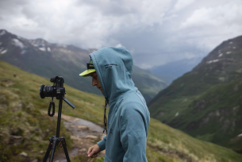
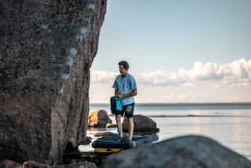
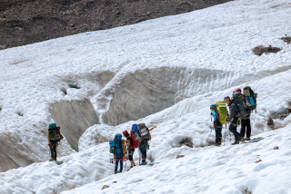
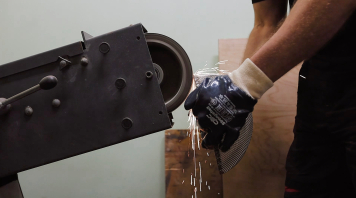

selected projects

Climbing Documentary
Coastal Bouldering
Expedition Notes
Sparks and Steel
about the author
Visual storytelling through movement, texture and real moments.
Nikolai is a photographer and videomaker working with outdoor stories, brands and personal portraits. His images balance raw landscapes, documentary intimacy and clean visual rhythm.
Across commercial and personal projects, he focuses on natural light, physical presence and details that make a scene feel lived-in rather than staged.